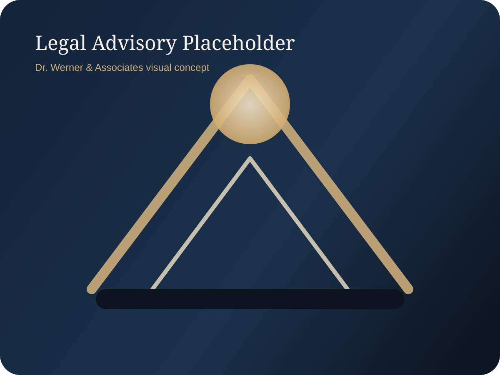

Legal Services
Dr. Werner & Associates
Legal advisory services for entrepreneurs, companies and international clients, provided exclusively through Dr. Werner & Associates.
- Contract and commercial matters
- Strategic cross-border legal counsel
- Compliance and business structuring support